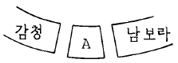
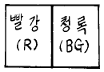
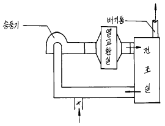

금속도장기능사 (2004-07-18 기출문제)
1과목: 색채
1. 다음 중 따뜻한 느낌의 색은?
- 파랑
- 보라
- 연두
- 귤색
(정답률: 알수없음)

2. 다음 보기표는 표준20색상환의 일부분이다. 됫에 해당되는 색은?

- 자주
- 남색
- 녹색
- 청록
(정답률: 알수없음)
3. 다음 색(색료)혼합에서 무채색에 가까운 색이 되지 않는 것은?
- 빨강+노랑+파랑
- 파랑 + 주황
- 노랑 + 파랑
- 녹색 + 자주
(정답률: 알수없음)
4. 다음 그림에서 나타나는 가장 큰 대비현상은?

- 명도대비
- 색상대비
- 보색대비
- 채도대비
(정답률: 알수없음)
5. 색 표시 기호가 잘못 연결된 것은?
- 빨강 - R
- 노랑 - Y
- 녹색 - G
- 보라 - B
(정답률: 알수없음)
6. 분광반사율이 각각 다른 두가지의 색이 어떤 광원 아래에서는 같은 색으로 보이는 현상이 일어난다. 다음 어느 것과 관계가 깊은가?
- 미레드(mired)
- 연색성(演色性)
- 메타메리즘(metamerism)
- 루터조건(Luther condition)
(정답률: 알수없음)
7. 빨강과 노랑색이 서로의 영향으로 빨강은 연지 기미가 많은 빨강으로, 노랑색은 연두 기미가 많은 노랑으로 변해 보이는 현상은?
- 계시대비
- 색상대비
- 보색대비
- 채도대비
(정답률: 알수없음)
8. 다음 중에서 포장한 상품을 크게 보이게 하려면 무슨색의 종이로 포장하는 것이 알맞겠는가?
- 주황색
- 파랑색
- 자주색
- 보라색
(정답률: 알수없음)
9. 다음 중 강함, 똑똑함, 생생함, 동적인 느낌 등을 받게되는 배색은?
- 동일색상의 배색
- 유사색상의 배색
- 반대색상의 배색
- 유사톤의 배색
(정답률: 알수없음)
10. 일반적으로 무난한 조화를 이루는 배색은?
- 보색끼리의 배색
- 고채도와 저채도의 배색
- 유사색끼리의 배색
- 한색과 난색의 배색
(정답률: 알수없음)
11. 빨강 빛과 청자 빛의 혼색은?
- 백광(white)
- 마젠타(magenta)
- 노랑(yellow)
- 시안(cyan)
(정답률: 알수없음)
12. 5YR 6/12는 무슨 색인가?
- 노랑
- 주황
- 빨강
- 자주
(정답률: 알수없음)
13. 염화고무 도료의 결점은?
- 내수성
- 내산성
- 내알칼리성
- 내열성
(정답률: 80%)
14. 다음 건조제 중 주로 표면건조를 촉진시키는 건조제는?
- 코발트(Co) 건조제
- 아연(Zn) 건조제
- 납(Pb) 건조제
- 망간(Mn) 건조제
(정답률: 알수없음)
15. 석유계 용제 중 탈지(유지류용해) 능력을 갖고 있는 것은?
- 벤젠, 휘발유, 석유에테르
- 메틸렌클로라이드
- 사염화탄소
- 삼염화에틸렌, 과염화에틸렌
(정답률: 알수없음)
16. 금속의 화성피막 처리방법이 아닌 것은?
- 오버플로우(over-flow)법
- 브러싱(brushing)법
- 롤러 코팅(roller-coating)법
- 침지법
(정답률: 알수없음)
17. 식물성 탄화수소계 용제는?
- 메탄올
- 아세톤
- 에테르
- 테레핀유
(정답률: 알수없음)
18. 래커 에나멜의 장점을 기술한 것 중 잘못된 것은?
- 속건성이다.
- 연마가 쉽다.
- 도막이 점착성이다.
- 내후성이 강하다.
(정답률: 알수없음)
19. 유기용제 배출량을 감소시킬 목적으로 개발된 도료는?
- 하이솔리드 도료
- 전착 도료
- NAD 도료
- 우레탄 도료
(정답률: 알수없음)
20. 일반 래커와 비교하여 하이솔리드 래커를 설명한 것 중 잘못 된 것은?
- 고형분이 많다.
- 도장회수가 많아진다.
- 자연건조는 조금 늦어진다.
- 내후성이 좋다.
(정답률: 알수없음)
2과목: 금속도장재료
21. 아연과 그 합금의 산세에 대한 설명으로 적당한 것은?
- 2-3%의 염산 용액으로 처리한다.
- 10%의 황산 용액으로 처리한다.
- 10-20%의 염산 용액으로 처리한다.
- 35-50%의 초산 용액으로 처리한다.
(정답률: 알수없음)
22. 퍼티 연마에 적합한 연마지는?
- #60∼80
- #240∼320
- #400∼500
- #600∼1000
(정답률: 알수없음)
23. 오일 프라이머의 특성으로 옳은 것은?
- 건조성이 약간 뒤떨어지고 반면 부착성, 내후성은 좋다.
- 건조성이 우수하고 반면에 부착성, 내후성이 나쁘다.
- 속건성이다.
- 건조성, 부착성, 내후성이 모두 우수하다.
(정답률: 알수없음)
24. 도료에 사용하는 용제 및 신너의 역할은?
- 도막을 형성하는 주요 성분으로써 안료를 균일하게 분산시켜 그 상태를 유지하게 한다.
- 도료 저장 중에 분산된 안료가 응집되거나 색이 변화되지 않도록 한다.
- 휘발성 물질로 수지를 녹이거나 도료를 적절히 사용할 수 있도록 액상으로 만들어 유동성을 부여해준다.
- 도료에 유연성, 내구력, 내한성을 주는 목적으로 사용한다.
(정답률: 알수없음)
25. 전착 도료의 장점으로 옳지 않은 것은?
- 균일한 도막 두께가 얻어진다.
- 도료의 손실이 극히 적다.
- 비교적 안정성이 높다.
- 소량생산에 적당하다.
(정답률: 알수없음)
26. 중도(Surfacer)도료에 대한 설명 중 잘못된 것은?
- 하도 도막을 보호하고 상도 도장시 용제의 침투를 막아 도장 결함을 예방한다.
- 중도를 도장하여 광택을 증진 시킨다.
- 중도의 건조 도막 두께는 보통 40 ~ 50 ㎛이 적당하다.
- 중도는 상도의 외관 및 부착력에 영향을 준다.
(정답률: 알수없음)
27. 합성수지 프라이머에 대한 설명 중 옳지 않은 것은?
- 여러 가지 종류의 합성수지를 전색제로 하여 방청안료를 넣은 것이다.
- 아미노 알키드 프라이머와 에폭시 프라이머는 가열시켜 사용하지 않는다.
- 자연건조형은 우레탄 프라이머, 비닐 프라이머, 염화 고무 프라이머 등이 있다.
- 프탈산 프라이머는 조성에 따라 가열 및 자연 건조형이 있다.
(정답률: 알수없음)
28. 도장 면에 부착되어진 왁스분말, 실리콘, 유지류, 기름때 등의 오염물질은 도장의 큰 장애이다. 이를 제거할 목적으로 사용하는 것은?
- 박리제
- 탈지제
- 첨가제
- 중화제
(정답률: 알수없음)
29. 다음 중 비철금속이 아닌 것은?
- 구리
- 니켈
- 주석
- 연철
(정답률: 알수없음)
30. 표면 처리에 관한 설명 중 맞는 것은?
- 제품의 가공과정 중 유지류를 제거하는 작업을 탈청이라 한다.
- 금속면에 생성 부착하고 있는 산화물이나 수산화물 층을 제거하는 작업을 탈지라 한다.
- 탈지후 내수성과 밀착성을 향상시키기 위한 작업을 상도처리라 한다.
- 화성피막처리된 피막은 치밀하고 견고하며 내수성이 좋고 공기중에서도 안정성이 좋다.
(정답률: 알수없음)
31. 다음 중 화염세정에 대한 설명 중 옳지 않은 것은?
- 고속의 화염을 통과시켜 금속표면의 불순물을 제거한다.
- 와이어 브러시나 스크레이퍼를 이용한 수공구 세정이 마무리 작업으로 첨가된다.
- 고속 화염으로 모든 도료들이 다른 세정작업 없이도 깨끗한 표면을 얻을 수 있다.
- 화재 위험성으로 사용에 많은 제약을 받고 있다.
(정답률: 알수없음)
32. 중막형일 경우 인산염 피막의 두께는?
- 100-80 g/m2
- 50-30 g/m2
- 20-10 g/m2
- 8-4 g/m2
(정답률: 알수없음)
33. 상도 페인트 1회 도포량의 두께로 가장 적합한 것은?
- 5~8㎛
- 10~15㎛
- 45~60㎛
- 30~35㎛
(정답률: 알수없음)
34. 그림과 같은 열풍건조로는 어떤 방식인가?

- 직접순환식
- 간접순환식
- 직접비순환식
- 간접비순환식
(정답률: 알수없음)
35. 건조기구를 가열 건조로 할 경우 건조의 기본 조건에 해당되지 않는 것은?
- 효율이 좋고 온도 상승이 느릴 것
- 조절이 가능할 것
- 설비비, 유지비가 적을 것
- 온도 분포가 균일할 것
(정답률: 알수없음)
36. 스프레이 도장에 대한 설명 중 잘못된 것은?
- 너무 멀리 떨어져 분무하면 표면이 거칠게 된다.
- 너무 가까이서 분무하면 균일한 도막의 두께를 가질수가 없다.
- 도폭이 중복되면 균일한 도막을 얻을 수 없으므로 절대로 중복되어서는 안된다.
- 압력이 높으면 도료의 손실이 많다.
(정답률: 알수없음)
37. 도료의 시험과 방법들의 관계가 잘못 짝지어진 것은?
- 부착성 검사 - 바둑 무늬 시험
- 도막 측정 - 엘코 미터
- 내충격성 - 방오성능 시험
- 해수침체 검사 - 내염수성 시험
(정답률: 알수없음)
38. 메탈릭 얼룩불량에 대한 대책으로 잘못된 사항은?
- 미립자 기능이 뛰어난 스프레이건을 사용한다.
- 1회에 두껍게 칠하지 않는다.
- 에어압력과 도료유량을 가감한다.
- 두번 칠하는 경우는 세팅시간을 짧게 한다.
(정답률: 알수없음)
39. 운반차의 사용시 적절치 못한 사항은?
- 과다히 무겁게 적재치 말 것
- 너무 급히 이송하지 말 것
- 구르기 쉬운 물건은 고정 시킬 것
- 가벼운 물건을 아래에 실을 것
(정답률: 알수없음)
40. 열풍로 작동시와 종료시에 점검 중의 사항으로 맞지 않는 것은?
- 오일 점검
- 프로판가스 게이지 상태와 호스에서 가스유출 상태
- 열풍로 작동시 취급은 누구나 할 수 있다.
- 인화물질 접근은 열풍로 작동시 절대 엄금해야 한다.
(정답률: 알수없음)
3과목: 금속도장
41. 전기기기 스위치 사용에 대한 설명 중 잘못된 것은?
- 퓨즈는 용량에 알맞는 것을 반드시 사용한다.
- 스위치 부근에 여러가지 재료를 놓지 않는다.
- 메인 스위치를 넣을 때는 관계 작업자에게 연락하고 신호한다.
- 메인 스위치의 위치는 접근하기 어렵고 위험하므로 잘 보이지 않는 곳에 설치한다.
(정답률: 알수없음)
42. 방진 마스크가 갖추어야 할 조건이 아닌 것은?
- 여과 효율이 좋을 것
- 중량이 있을 것
- 시야가 넓을 것
- 안면에 밀착성이 좋을 것
(정답률: 알수없음)
43. 에어레스 스프레이 장치의 플랜저 펌프(flanger pump)에 관한 설명 중 틀린 사항은?
- 압축 공기에 의해 왕복 운동을 한다.
- 펌프의 배율이 일반적으로 1:20∼1:40이다.
- 에어 모우터와 플랜저 몸체로 이루어진다.
- 도료의 압력을 가능하면 저압 상태로 유지시킨다.
(정답률: 알수없음)
44. 에어레스 스프레이 도장(airless spray coating)에 대한 설명 중 틀린 것은?
- 도료의 소비량이 절약된다.
- 작업시 오버 스프레이가 적다.
- 모퉁이 부분 또는 오목한 부분의 도장이 잘 된다.
- 작업 능률이 우수하다.
(정답률: 알수없음)
45. 도막의 층간 밀착 불량이 발생하는 이유와 관계 없는 것은?
- 하도가 오-버 베이킹 되었을 때
- 상도가 언-더 베이킹 되었을 때
- 상,하도 다른 계통의 도료를 사용 했을 때
- 하도의 도막을 연마 했을 때
(정답률: 알수없음)
46. 도장설계시 가장 고려하지 않아도 되는 사항은?
- 도장공법의 선정
- 도료의 선정
- 도장목적의 이해
- 도장공의 기능도
(정답률: 알수없음)
47. 상도표면에 먼지 등이 있는 경우 사용하는 연마지로 가장 적합한 것은?
- #400 ∼ #500
- #1000 ∼#1200
- #100 ∼ #150
- #200 ∼ #300
(정답률: 알수없음)
48. 1회 도장으로 가장 두꺼운 도막이 형성되는 퍼티는?
- 오일퍼티
- 캐슈퍼티
- 래커퍼티
- 폴리에스테르퍼티
(정답률: 알수없음)
49. 래커 프라이머에 대한 설명 중 틀린 것은?
- 속건성이다.
- 내후성이 우수하다.
- 부착성이 낮다.
- 전색제는 래커이다.
(정답률: 알수없음)
50. 붓도장에서 가장 빠른 작업성을 요하는 도료는?
- 유성페인트
- 알키드수지페인트
- 래커페인트
- 수성페인트
(정답률: 알수없음)
51. 다음 도료의 시험법 중에 유출식 점도계에 속하지 않는 것은?
- 오스왈드 점도계
- 레드우드 점도계
- 포드컵 점도계
- 스토머 점도계
(정답률: 알수없음)
52. 상도도장의 요구사항을 나열한 것이다. 가장 타당한 것은?
- 피도면의 보호와 밀착성을 향상시킨다.
- 후속 도료의 흡수로 인한 광택 저하 방지를 한다.
- 색상, 광택 등의 외관 향상과 모든 물성을 부여한다.
- 하도와 중도의 부착성을 높이고 평활성을 부여한다.
(정답률: 알수없음)
53. 흡상식 스프레이 건으로 도장 작업 중 조절 할 수 없는 것은?
- 페인트 토출량
- 공기압력 조절
- 페인트 분사폭(pattern)조절
- 건의 노즐 조절
(정답률: 알수없음)
54. 에어 트랜스포머에 대한 설명 중 옳지 않은 것은?
- 압축공기 중의 수분, 먼지만을 제거하는 역할을 한다.
- 수분이나 유분이 분출될 때는 필터를 교환 또는 세척한다.
- 스프레이건의 가까운 곳에 설치한다.
- 배출밸브는 하루 2∼3회 정도 방출시킨다.
(정답률: 알수없음)
55. 다음은 메탈릭이나 펄 도장시 자주 발생되는 얼룩에 대한설명이다. 잘못된 것은?
- 도장 조건의 밸런스가 나빠도 얼룩이 생길 수 있다. (공기 압력, 도료의 분사량 등)
- 메탈릭이나 펄 컬러의 얼룩은 베이스의 도막 두께나 프레쉬 타임과는 관계가 없다.
- 스프레이 건의 이상으로 얼룩이 생길 수 있다.
- 부적절한 신너나 도장 작업시 스프레이 테크닉도 얼룩에 영향을 줄 수 있다.
(정답률: 알수없음)
56. 미싱, 미술 공예품, 문방구 등의 피도물 도막의 무늬에 사용되는 것은?
- 래커 에나멜
- 멜라민 에나멜
- 메탈릭 에나멜
- 아크릴 에나멜
(정답률: 알수없음)
57. 오일 퍼티에 관한 설명 중 옳지 않은 것은?
- 사용 전색제는 골드 사이즈, 유성 바니쉬를 사용한다
- 사용안료는 체질안료, 아연화 등이다.
- 오일 퍼티의 두께는 0.8 ∼ 1.0㎜ 정도가 표준이다.
- 내후성 및 부착성이 양호하며 저렴하다.
(정답률: 알수없음)
58. 다음은 도료와 용제 등의 취급시 주의사항을 설명한 것이다. 거리가 먼 것은?
- 적절한 환기장치를 설치한다.
- 도료, 용제, 경화제가 눈에 들어갈 경우에는 누워서 안정을 취한다.
- 용제 및 캔의 뚜껑은 반드시 밀봉하여 보관한다.
- 도장 작업장 금연 및 화기 접근을 엄금한다.
(정답률: 알수없음)
59. 다음 중 붓을 선택할 때의 고려사항 중 거리가 먼 것은?
- 붓털의 길이가 일정하고 털끝이 강한 것을 선택한다.
- 붓털 끝이 균일하게 정리되어 있고 도료를 묻혀서 갈라짐이 없는 것을 선택한다.
- 붓의 뿌리 부분이 튼튼하고 탈모가 없는 것을 선택한다.
- 옻칠붓의 경우 목재의 접착이 튼튼한 것을 선택한다.
(정답률: 알수없음)
60. 다음 중 도장면 수세작업에 대한 설명으로 거리가 먼 것은?
- 도장면을 에어더스트 건으로 도장면에 묻은 먼지를 모두 제거한다.
- 타르, 실리콘, 왁스, 오일, 그리스 등은 비눗물이나 세제를 이용하여 제거한다.
- 사용후에는 마른 종이 걸레나 면 걸레로 닦아낸다.
- 기후가 습한 경우에는 드라이 오븐이나 건조기를 이용한다.
(정답률: 알수없음)